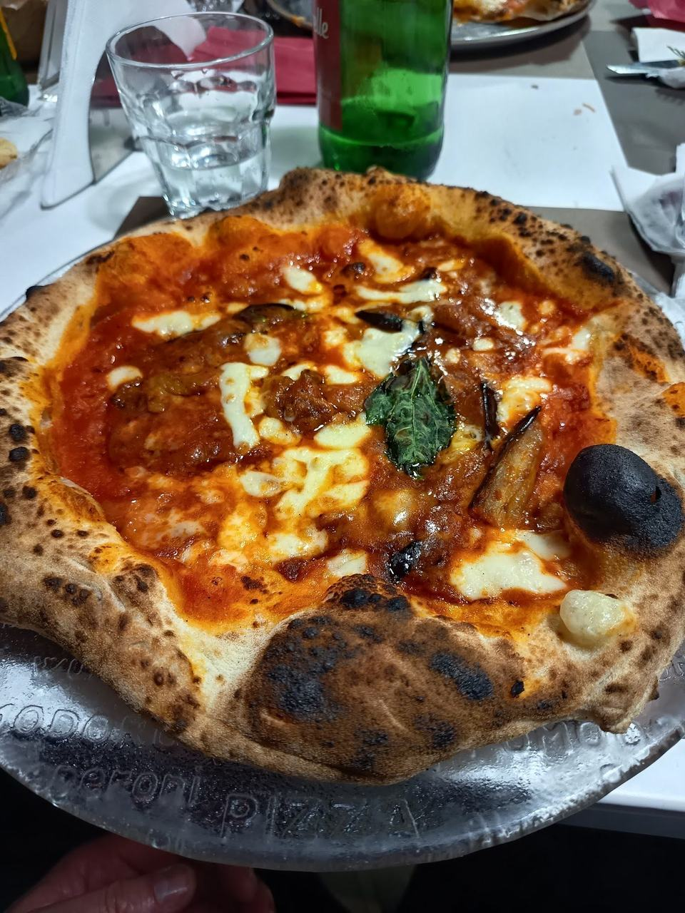
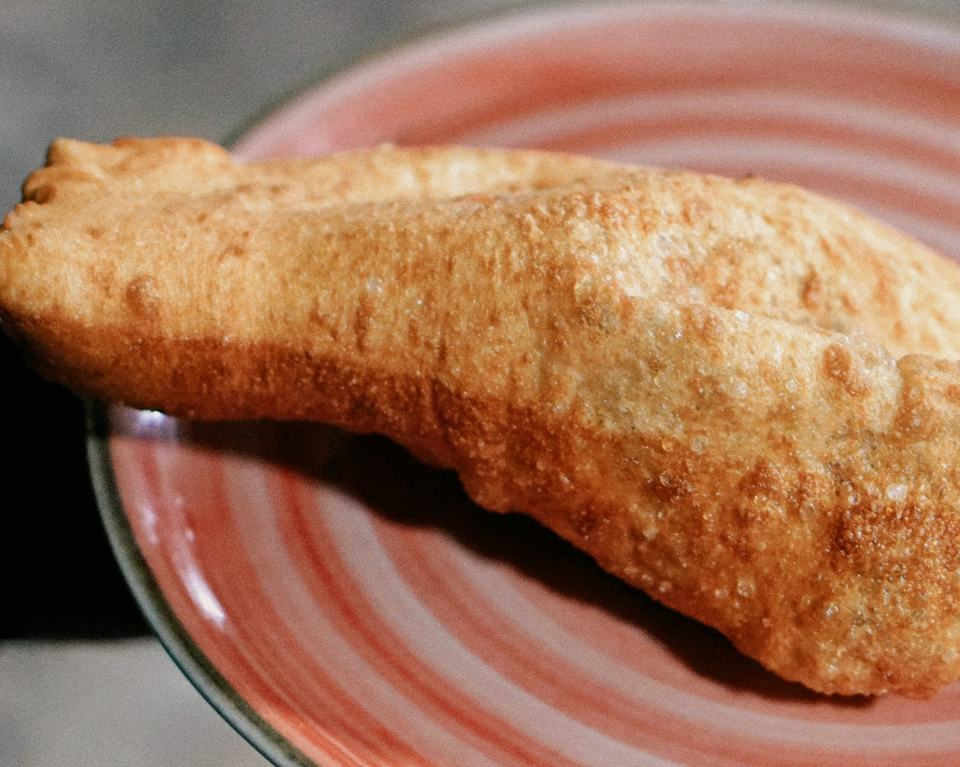
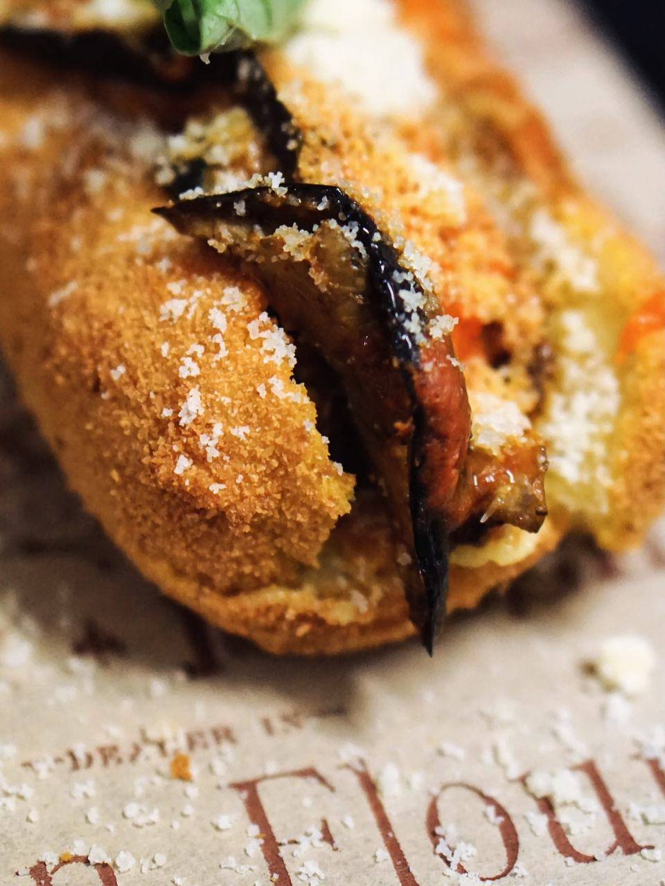
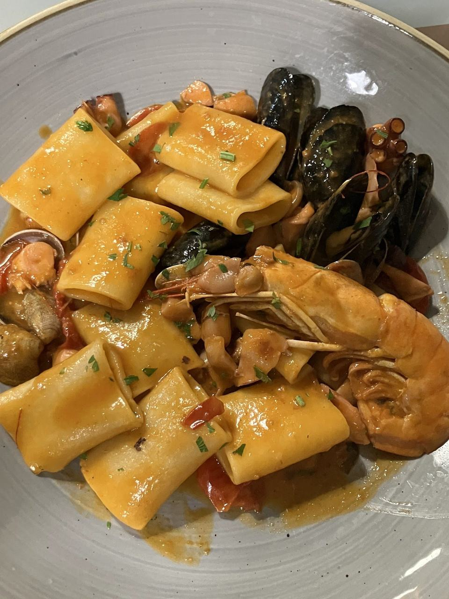
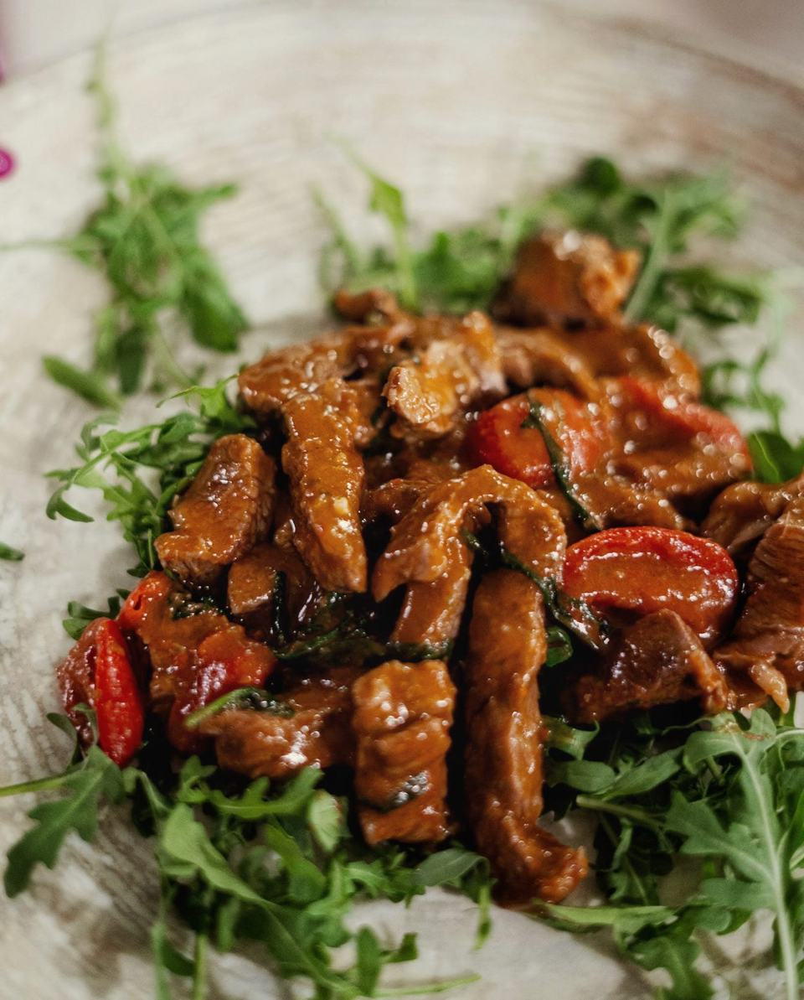

Margherita
Pomodoro San Marzano, fior di latte di Agerola, parmigiano e basilico
Pepe Nero · il menu
Il nostro menu ha più di trecento voci. Qui trovi da dove cominciare; tutto il resto, con prezzi e allergeni, è nel menu digitale.

Napoletana, cornicione alto, fior di latte di Agerola
Pomodoro San Marzano, fior di latte di Agerola, parmigiano e basilico
Pomodorini freschi datterino, poco sugo, fior di latte di Agerola, basilico
Mozzarella di bufala, pomodorini pachino e poco sugo
Cornicione ripieno di ricotta, pomodorini, bufala DOP
Provola di Agerola, ragù e polpette
Mortadella, pesto di pistacchio di Bronte, trito di pistacchi
C’è anche la pizza a ruoto: ’O sole mio, Passione, Luna Rossa…

Spaccanapoli, frittatine, crocchettoni
Pizzetta fritta con pomodoro, parmigiano e basilico
Pizzetta fritta con pistacchio, burrata e mortadella
Bucatini, carne macinata, besciamella, salsiccia, piselli
Patate lesse, grana padano, pecorino romano, pepe, bacon (180 g)
Bastoncini di pasta di pizza fritta con datterino

Al ragù, al pistacchio, cacio e pepe
Polpette di manzo con ragù
Polpettine di manzo con crema di parmigiano e pesto di pistacchio
Cannolo siciliano ripieno di parmigiana di melanzane, mousse di mozzarella di bufala, scaglie di parmigiano

Paccheri alla pescatora, scialatielli, baccalà
Con seppia, gamberoni, pomodorini datterino, cozze, vongole e prezzemolo
Linguine con vongole veraci, pomodoro datterino e prezzemolo
Scialatielli veraci, vongole, cannolicchi, cozze, macchiato al pomodorino e prezzemolo
Con ziti, cipolla, battuto di carote sedano e odori, carne di manzo a pezzi e pecorino
Cozze, vongole, cannolicchi, polpo, gamberone, leggermente macchiato, olio piccante, fresella e tarallo con pepe
Con baccalà, pomodoro, olive nere, capperi

Tagliate argentine, Chianina, fiocco di vitello
Con carne di Angus argentino, scaglie di grana e rucola (250 g)
Cotto a bassa temperatura, glassato all’Aglianico su soffice di patate
8 miniburger di chianina alla brace serviti con 3 salsine
300 g
Verdure grigliate, salsiccia, patate al forno, manzetta texana, mini hamburger di chianina, reale di manzo americano
Pane brioche o pane pizza, tutto farcito
Con lardo di Colonnata, formaggio di fossa, hamburger chianino, fior di latte di Agerola, cipolla caramellata
Con fiordilatte, polpette al ragù, parmigiana di melanzane
Hamburger di chianina 200 g, formaggio roquefort, cipolla di Tropea e crema di parmigiano
Con misticanza, pomodoro ramato, cotoletta di petto di pollo e patatine
Tre hamburger, patatine fritte, bacon, cheddar, maionese affumicata piccante, provola di Agerola
Pane brioche o pane pizza, scegli tu.
Pizza dolce col cornicione ripieno di crema pasticcera, amarene e chantilly
Con crema di babà e nutella
Cocco, mango, lampone, nocciola
Senza glutine e senza lattosio
Senza glutine
Tutte le pizze, i vini e gli allergeni sono nel menu digitale ↗
Un messaggio su WhatsApp e vi teniamo il posto.